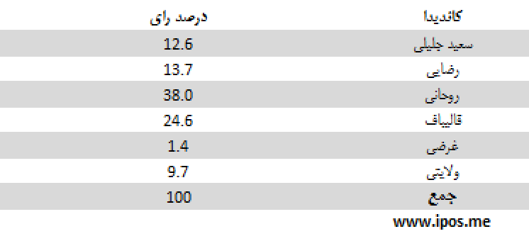
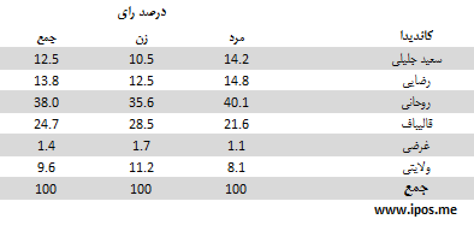
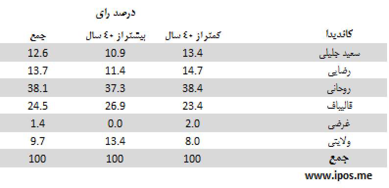

مهمترین یافتهها:
- بنا به «یکی از الگوهای پیشبینیِ» انتخابات فردا، اگر کسانی که تا دیروز برای شرکت در انتخابات تصمیم نگرفتهاند و رایشان جنبهی اعتراضی دارد، بخواهند نهایتا به نامزدهای موجود رای دهند، احتمال پیروزی در دور اول برای آقای حسن روحانی، نامزد پیشتاز انتخابات، وجود دارد.
- بنا به «الگوی دوم پیشبینی»، در صورتی که آرای افراد تصمیمنگرفته الگویی مشابه آرای افراد تصمیم گرفته داشته باشد، انتخابات با حضور آقایان روحانی و قالیباف به دور دوم خواهد رفت.
- اما «یافتههای خامِ» آخرین نظرسنجیiPOS ، تا روز 23 خرداد، نشان میدهد که تا سه روزِ منتهی به روز انتخابات، آقایان روحانی و قالیباف با در اختیار داشتن 38 و 25 درصد آرای کسانی که میگویند در انتخابات شرکت میکنند بالاتر از سایر نامزدها قرار گرفتهاند.
- همین یافتهها نشان میدهد که تا یک روز پیش از انتخابات، حدود 39 درصد از پاسخگویان هنوز تصمیم نگرفتهاند به چه کسی رای دهند و 11 درصد یا از افشای نام نامزد خود خودداری میکنند، یا به نام افراد دیگر اشاره میکنند و یا پاسخهایی دیگر میدهند.
- معنای روشن این یافتهها این است که تصمیمگیری این افراد اکنون به عنصری تعیین کننده در انتخابات فردا بدل شده است. رای این گروه میتواند رتبهی تمامی نامزدها را - از لحاظ نظری - تغییر دهد. این پرسش که آیا در عمل نیز ورود این افراد به صحنهی انتخابات منجر به دگرگونی رتبهها و نسبت آرای نامزدهای موجود میشود یا خیر، باید بر اساس سناریوهای متفاوت مورد بحث قرار گیرد (برای بحث بیشتر به قسمت تحلیلها در همین نوشته مراجعه کنید.)
- به طور کلی، از میان تمامی پاسخگویانی که میگویند در انتخابات شرکت میکنند، گذشته از 39 درصدی که تصمیم مشخصی اتخاد نکردهاند و حدود 11 درصدی که به افراد دیگری تمایل داشته یا از اعلام نظر خود خودداری کردهاند، آقای روحانی با در اختیار داشتن 19.1 درصد آرا در میان 6 نامزد موجود، در صدر قرار دارند. پس از ایشان آقایان قالیباف با 12.4 رد رتبهی دوم قرار میگیرند. آقایان رضایی و جلیلی به ترتیب با 6.9 و 6.3، در ردههای دوم تا چهارم قرار میگیرند. پس از اینان، آقایان ولایتی وغرضی قرار دارند.
- اگر از میان پاسخگویانی که میگویند در انتخابات شرکت میکنند فقط کسانی در نظر گرفته شوند که تاکنون تصمیم گیری کرده و از میان 6 نامزد موجود یک نفر را انتخاب کرده اند، آقای روحانی با در اختیار داشتن 38 درصد آرا در میان 6 نامزد موجود، در صدر قرار دارند. پس از ایشان آقای قالیباف، با 24.6 درصد آرا در ردهی بعد قرار میگیرند. آقایان رضایی و جلیلی به ترتیب با 13.7 و 12.6 درصد در ردههای سوم و چهارم قرار میگیرند. پس از اینان، آقایان ولایتی وغرضی قرار دارند به ترتیب با 9.7 و 1.4 درصد آرا.
سئوال: اگر قرار بود همین امروز در انتخابات ریاست جمهوری شرکت کنید به کدام یک از کاندیداها رای میدادید؟

این جدول نشان میدهد پاسخدهندگانی که میگویند در انتخابات شرکت میکنند، از نظر تصمیمگیری برای رای دادن در چه و ضعیتهایی قرار دارند.
سئوال: اگر قرار بود همین امروز در انتخابات ریاست جمهوری شرکت کنید به کدام یک از کاندیداها رای میدادید؟

این جدول نشان میدهد از میان پاسخدهندگانی که میگویند در انتخابات شرکت میکنند، و از میان 8 نامزد موجود یک نفر را انتخاب کردهاند، هریک از نامزدها چه میزان رای دارند.
جدول زیر میزان اقبال به نامزدها را بر اساس جنسیت (زن و مرد) نشان میدهد:

در جدول زیر میزان آرای نامزدها در میان دو گروه سنی (کمتر از 40 سال و بیشتر از 40 سال) مقایسه شده است:

در جدول زیر میزان آرای نامزدها در میان پاسخ دهندگان مقیم در مناطق شهری و غیر شهری مقایسه شده است:

تحلیل:
میزان مشارکت
- میزان مشارکت در این نظرسنجی بالای 75 درصد بوده است.
- اگر درصد بالایی از کسانی را که از پاسخ به سوالات ما امتناع کردهاند، معادل کسانی فرض کنیم که در انتخابات شرکت نخواهند کرد و به همین دلیل از پاسخ به سوالات مربوط به انتخابات سرباززدهاند، آنگاه میزان مشارکت کاهش خواهد یافت.
- با این همه باید افزود میزان مشارکت بالا در این نظرسنجی لزوماً معادل همان میزان از نسبت شرکت کنندگان در روز انتخابات نیست. در نظرسنجیها، معمولاً میزان «اعلام مشارکت»، بیش از میزان «مشارکت عملی» در روز انتخابات است. تفاوت «مشارکت اعلامی» و «مشارکت عملی» فقط به ایران اختصاص ندارد.
- اعلام مشارکت بالا، فقط جنبهی سیاسی هم ندارد که ناشی از ترس در پاسخ به سوال باشد، بلکه می تواند ناشی از این واقعیت ساده باشد که وقتی از مردم برای شرکت در انتخابات سوال می شود آنان فقط باید تمایل خود را «اعلام» کنند اما نیاز به «عمل» (شامل آماده شدن، رفت و آمد، هزینههای زمانی و مادی) برای رای دادن ندارند. حال آن که در روز رای گیری آنان باید همه این اعمال را انجام دهند، که به سادگی اعلام یک کلمه «بله» نیست.
- اعلام مشارکت بالا، همچنین می تواند تا حدی نیز ناشی از ملاحظات روانشناسی سیاسیِ حاکم بر جامعهی ایران باشد، ملاحظاتی که می تواند مردم را به همنوایی با خواست حکومت مبنی بر لزوم شرکت در انتخابات سوق دهد. این همنوایی می تواند نوعی اریبی روشمند در داده های مربوط به میزان مشارکت ایجاد کند.
- با توجه به همهی این ملاحظات ارقام میزان مشارکت در این نظرسنجی را باید با احتیاط تفسیر کرد.
رای به نامزدها
- نظرسنجیهای چرخشی با جمع نظرهای مردم در دورههای چند روزه انجام میشود. در نظرسنجی iPOS این نظرسنجی ها در دوره های 4 روزه انجام می شود. با این اوصاف، به دلیل تجمیع نتایج، آثار تغییرات جدید به خاطر ادغام با اطلاعات حاصل از روزهای قبل تعدیل می شود.
- iPOS برای درک بهتر تحولا سریع روزهای آخر این بار گزارش نظرسنجی خود را بر مبنای تجمیع آرای 3 روز اخیر تنظیم کرده است. (به دلیل ملاحظات لجستیکی، انجام دو روزه و یک روزهی نظرسنجی در روزهای آخر امکانپذیر نشد).
- برای درک بهتر تحول آرا و ترسیم تصویر بهتری از آنچه در انتخابات فردا میتوان انتظار داشت، باید هم تحول آرای نامزدها تحلیل شود هم تخمینی از آرای افراد تصمیم نگرفته به دست داد.
- پیشیگرفتن آرای آقای روحانی محصول رشد مدوام آرای ایشان از روزهای بعد از آخرین مناظرهی تلویزیونی بوده است که تا آخرین روز نظرسنجیها در 23 خرداد ادامه داشته است. به این ترتیب میشود حدس زد روند رو به رشد آرای ایشان فردا نیز متوقف نمیشود، گرچه بر اساس آرای افراد تصمیم نگرفته، میتوان گفت این رشد امروز شیب کمتری نسبت به روزهای گذشته داشته است.
- آرای آقای قالیباف نیز به طور کلی روندی نزولی را طی کرده است. اگر تحول مهمی رخ ندهد نباید انتظار داشت در این روند تغییر مهمی رخ دهد. البته، به دلیل رسیدن به کفِ رای، میشود انتظار داشت که این روند کند شود.
- در مورد الگوی رفتاری انتخاباتی افراد تصمیمنگرفته و کسانی که رای نمیدهند، مطالعات معدودی با دامنهی برد محدود صورت گرفته است. بر مبنای پژوهشهای انتخاباتی «گروه پژهشی آینده»، میتوان گفت – بر خلاف انتظار و بر خلاف نظر مشهور - در اواخر دههی هفتاد و اوایل دههی هشتاد تفاوت قابل ملاحظهای بین رفتار افراد دیر تصمیم گرفته و افراد رای نداده از یک سو و افراد رای داده از سوی دیگر وجود نداشته است.
- گرچه بویژه پس از رویدادهای پس از انتخابات سال 88 رای ندادن معنایی متفاوت با نوعی اعتراض اجتماعی به خود گرفته است. اما می شود حدس زد آن دسته از کسانی که نهایتا رای میدهند، یا از گروه معترضان اجتماعی نیستند یا در صورت رای دادن به نامزدهایی رای خواهند داد که دوری کمتری از معنای اعتراض آنها داشته باشند.
- بر این دو مبنا میتوان دست کم از دو سناریوی محتمل برای نتیجهی انتخابات جمعه 24 خرداد سخن گفت:
- الگوی اول مبنتی بر عدم تفاوت آرای تصمیم نگرفتهها و تصمیم گرفتههاست، که در این صورت رتبه و نسبت آرای افراد در نظرسنجی تغییر نمیکند.
- الگوی دوم مبتنی بر تمایل آرای تصمیم نگرفتهها به سوی نامزدی است که از معترضان دورتر است. در این حال بسته به نسبت آرای اعتراضی در میان کل تصمیم نگرفتهها ارقام متفاوتی حاصل میشود. در صورتی که بنا به فرض بیش از 65 درصد آرای این عده معطوف به نفر اول، یعنی آقای روحانی باشد، ایشان ممکن است در دور اول پیروز انتخابات باشند.
رای به نامزدها بر اساس سن، جنس و تحصیلات پاسخ دهندگان
- تحلیل آرای نامزدها بر اساس جنسیت، سن، تحصیلات، از نظر آماری رابطهی معنی داری بین این عوامل و رای به نامزدها را نشان نمیدهد. به علاوه این رابطهها سیال است و در بسیاری از موارد روز به روز تغییراتی را نشان میدهد که حاکی از تاثیر نمونه بر آن است. با این همه برخی تفاوتها، با رعایت این ملاحظات، قابل ذکر است.
- بررسی آرای نامزدها بر اساس جنسیت پاسخگویان نشان می دهد از میان کسانی که به آقایان قالیباف و ولایتی رای می دهند، نسبت زنان اندکی بیشتر از مردان است.
- .همچنین می توان گفت، در میان رای دهندگان به آقایان جلیلی، رضایی و روحانی، افراد کمتر از 40 سال نسبت بیشتری از افراد بالای 40 سال دارند.
- از نظر سطح تحصیلات، میان رای دهندگان به آقایان قالیباف و ولایتی، افراد با تحصیلات دانشگاهی، به نسبت بیشتری به به چشم میخورند.
- وقتی پاسخگویان را بر حسب منطقه زندگی آنان به دو گروه شهری و غیر شهری (شامل جمعیت روستایی و عشایری) تقسیم کنیم، میتوان گفت که در میان رای دهندگان به آقای روحانی، قالیباف و ولایتی، نسبت شهریها به غیرشهریها بیشتر از بقیهی نامزدها است.
روش اجرای نظرسنجی
- نظرسنجیهای iPOS منتشر شده در روز سه شنبه 21 خرداد به شیوه چرخشی (Rolling) سه روزه انجام شده است. (به دلیل تاثیر رای روزهای 19 و 20 و 21 خرداد، در نتایج منتشر شده، آرای آقایان عارف و حداد عادل که از کاندیداتوری انصراف داده اند نیز مورد محاسبه قرار گرفته است. پیش بینی می شود در دو روز آینده و با حداقل شدن تاثیر روزهای قبل بر نتایج نظرسنجی، آمار کاندیداهای انصراف داده به صفر برسد.
- نمونهگیری به صورت مرحلهای طبقهبندی شده در سطح استانها است. دارندگان تلفنهای ثابت و همراه در سطح کل کشور واحد نمونه را تشکیل میدهند. حجم نمونه 1067 نفر است.
- یافتههای نظرسنجی را می توان با اطمینان 95 درصد و در فاصلهی اطمینان 3 درصد به کل افراد بالای 18 سال ایرانی ساکن ایران تعمیم داد.
- مصاحبهها به صورت تلفنی و با پرسشگران آموزش دیده در طول ساعات فعال هرروز انجام میشود.